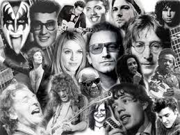
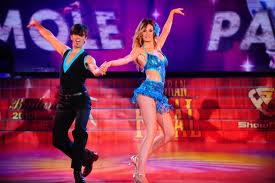

generos musicales
"La Música es antes que todo un arte, que combina los sonidos y el silencio conforme
a los principios de la melodía, la armonía y el ritmo, siendo estos sus elementos esenciales.
Al mismo tiempo, es una ciencia, por lo cual debe ser apreciada emocionalmente y comprendida
intelectualmente."
.jpg)
Realizado por: Nancy Trifundio Garcia y Carolina Romero Ceron
Bachata
.jpg)
La bachata es un género musical bailable originario de la República Dominicana, dentro de lo que se denomina folclore urbano. Está considerado como un derivado del bolero rítmico, hibridado con otros estilos como el Son cubano, bolero son y el merengue.
El movimiento básico del baile es una serie de pasos simples que produce un movimiento de adelante para atrás, o de costado a costado.
pop
.jpg)
La música pop (del inglés pop music, contracción de popular music) es un género de música popular que tuvo su origen a finales de los años 50 como una derivación del rock and roll, en combinación con otros géneros musicales que estaban en boga en aquel momento.
Aunque la música pop es a menudo vista como orientada a las listas de ventas de sencillos, como género no consiste simplemente en la suma de todos los éxitos musicales, que ha contenido siempre canciones procedentes de una variedad de fuentes, entre ellas la música clásica, el jazz o el rock, sino que configura un género con una existencia y desarrollo separados.
salsa
.jpg)
Salsa es el término usado a partir de los años setenta para definir al género musical resultante de una síntesis de influencias musicales cubanas con otros elementos de música caribeña, música latinoamericana y jazz, en especial el jazz afrocubano. La salsa fue desarrollada por músicos de origen «latino» (latinoamericano) en el Caribe hispano y la ciudad de Nueva York.
La salsa abarca varios estilos como la salsa dura, la salsa romántica y la timba.
rap
El rap es un tipo de sprechgesang o recitación rítmica de rimas y juegos de palabras surgido a mediados de la década de los 80 entre la comunidad afroamericana de los Estados Unidos. Es uno de los cuatro pilares fundamentales de la cultura hip hop, de ahí que a menudo también se le llame metonímicamente (y de forma imprecisa) hip hop. Aunque puede interpretarse a capella, el rap va normalmente acompañado por un fondo musical rítmico conocido con la voz inglesa beat. Los intérpretes de rap son los MC, “maestro de ceremonias”.
banda
El género que conocemos como música banda hace parte del amplio universo que es la música regional mexicana. Pese a tener un caracter folclórico, la música banda nace de la mezcla de otros generos musicales de diferentes latitudes.
Si vamos juntos no hay por que tener temor
electronica
La música electrónica es aquel tipo de música que emplea para su producción e interpretación instrumentos electrónicos y tecnología musical electrónica. En general, puede distinguirse entre el sonido producido utilizando medios electromecánicos de aquel producido utilizando tecnología electrónica. Ejemplos de dispositivos que producen sonido electromecánicamente son el telarmonio, el órgano Hammond y la guitarra eléctrica.
trival
Este nuevo genero, el tribal, consiste en una fusión musical del genero electrotécnico como géneros como el norteño, la banda y el grupero y existiendo en este, a diferencia del electronorteño, una predominasion sonora de las rítmicas electrónicas hechas con sintetizadores.
Este nuevo genero, aun se encuentra en. Periodo de desarrollo, por tanto, es un poco complicado hablar de artistas y grupos, aun se encuentra en su fase primaria en donde, quienes le realizan, estar generando rítmicas base para su posterior producción y añadir arreglos sonoros y detalles.
Hoy en día el tribal se encuentra de forma casual, temas publicados vía internet o bajo algún sello discográfico pequeño y desconocido,solo el tiempo dirá si el genero llega a las grandes ligas o se queda como algo estrictamente casual, con artistas y creativos desconocidos que hicieron su intento y no llegaron a mayores.
rock

Rock es un vocablo inglés que hace referencia a un género musical de ritmo muy marcado, nacido a partir de la fusión de varios estilos del folclore estadounidense y popularizado desde de la década de 1950.
RockEl concepto original mencionaba al rock and roll como la mezcla del blues, el rhythm and blues, el country y otros estilos. En la actualidad, suele utilizarse el término rock para nombrar a los estilos modernos derivados del rock and roll, quedando éste último concepto para designar al ritmo original que surgió en los ’50.
merengue

El merengue es quizás el baile más accesible de todo el repertorio de la música tropical. Tiene un ritmo fácil de seguir y sus pasos son sencillos. Casi siempre se baila en pareja, ya sea en una fiesta o en una discoteca.
De fama internacional, el merengue es el baile y género musical oficial de la República Dominicana. Al igual que otros bailes tropicales como la salsa, el baile del merengue nace de la fusión entre lo africano y lo europeo.
Movimiento de caderas en el merengue
El movimiento de caderas en el merengue es primordial. Este movimiento es el mismo movimiento de caderas que se hace en otros bailes latinos, como la salsa o el chachachá.
El movimiento de caderas en el merengue surge de una manera natural cuando doblas y estiras las rodillas. Es el resultado de lo que haces con tus pies, el cambio de peso en tu cuerpo y el movimiento de las rodillas.
k-pop
En los últimos años en México se empieza a conocer un nuevo concepto en música en los jóvenes de nuestro país,el pop coreano o mejor conocido como el K-pop.
Kpop se deriva de la abreviación de korean Pop, en ingles, proveniente de Corea del Sur. Durante estos últimos años a llegado a expandirse hasta sobre pasar nuestras fronteras gracias a la tecnología del Internet. A través de canales como YouTube y Facebook los artistas y grupos coreanos se han dado a conocer alrededor del mundo pues su música es un nuevo concepto, su principal característica es el estilo de baile que conlleva las canciones y los diferentes estilos de vestir por el uso de colores muy llamativos.
.jpg)
.jpg)
.jpg)
.jpg)